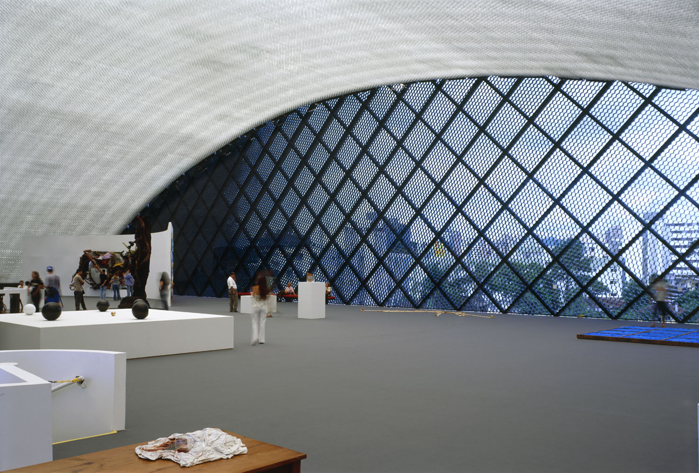
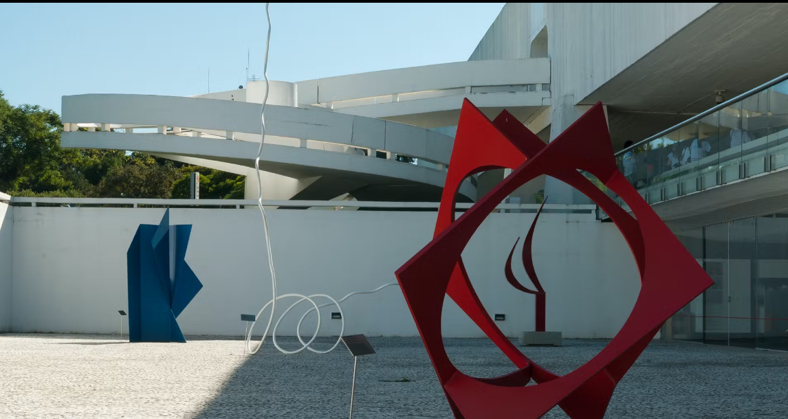
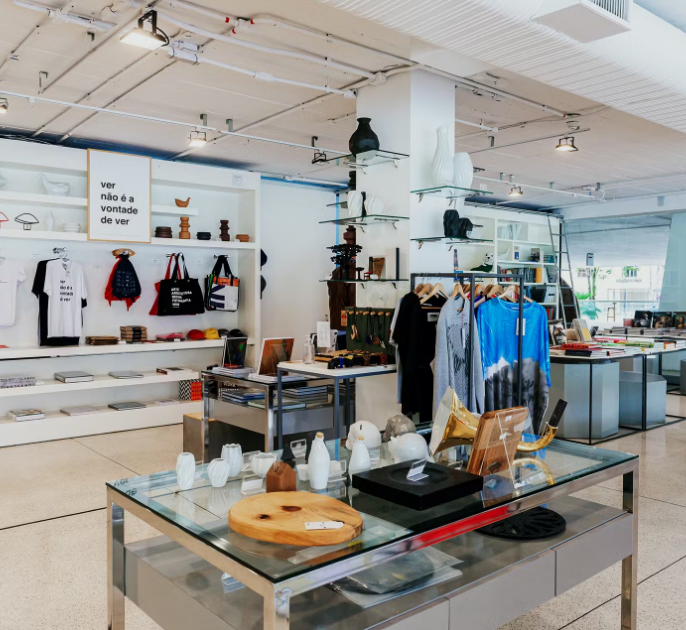
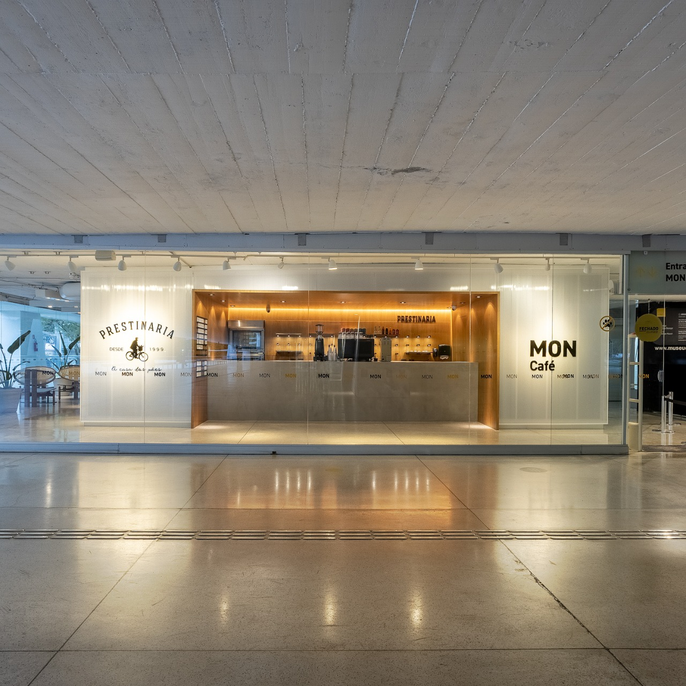

Interior da Torre/Olho do museu

Localização
No interior da Torre, os visitantes podem desfrutar de uma exposição interativa
sobre a vida e obra do renomado arquiteto brasileiro. Além disso, podem apreciar a vista panorâmica da cidade a partir do mirante,
participar de workshops e palestras sobre arquitetura e design, proporcionando uma experiência completa e inspiradora.
Pátio das esculturas

Localização
O Pátio das Esculturas do Museu Oscar Niemeyer é um espaço impressionante que abriga
uma coleção de obras de arte ao ar livre. Com um ambiente tranquilo e cercado pela arquitetura única
do museu, os visitantes podem apreciar esculturas de diferentes estilos e artistas renomados. É um lugar
perfeito para contemplar a beleza das formas artísticas, explorar as texturas e apreciar
a harmonia entre a arte e o espaço ao ar livre.
MON loja

Localização
A MON loja é um lugar encantador para os visitantes encontrarem presentes exclusivos e
peças de vestuário inspiradas no universo da arte e do design. Com uma seleção cuidadosa de produtos, desde itens de decoração até acessórios de moda,
a loja oferece uma variedade de opções que refletem a criatividade e o estilo contemporâneo presentes no museu.
É o local perfeito para encontrar lembranças únicas e originais que celebram a cultura e a arte.
MON Café

Localização
O MON Café, no Museu Oscar Niemeyer em Curitiba, é um lugar acolhedor para os amantes de café e gastronomia. Com ambiente moderno
e vistas deslumbrantes, oferece uma ampla seleção de bebidas quentes e refrescantes, além de deliciosos lanches
e doces preparados com ingredientes de alta qualidade. É o ponto de encontro perfeito após explorar as exposições de arte.